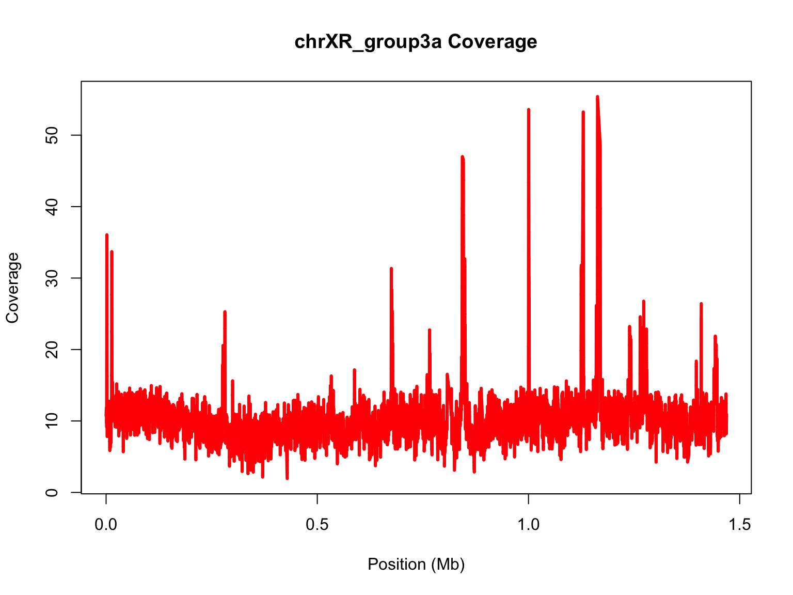

Laurie Stevison
If you are using this code with the video, note that some slides have been added post-recording and are not shown. See 4.05.walkthrough.R in the compressed data tarball for the code from the recording.
So far we’ve treated R as separate from linux, but you can execute R from the command line. This is the focus of this tutorial.
Normally we would make an R Notebook, but since we are planning to use this script on the CL, start an RScript in RStudio. We will work with a different subset of the depth data from Activity #1.
You will also want to copy the data files into this folder to follow along, even if you load our data object.
You are working within an R Project (check in the top right corner of RStudio - you should see the project name “R_Mini_Course”).
This means that the project directory will also be set as working directory.
You should be saving your R Script in the R Project and using
/modules/Module_7/ to point at the current module
directory.
Before starting, it may be helpful to have a chunk of code that does the following:
rm(list=ls())library(<package-name>)sessionInfo()list.files(getwd())Let’s use some data from my lab! These are raw data from an experiment where we measured the impact of temperature on meiotic recombination rate.
We recorded phenotype as 0’s or 1’s, so we will use R to categorize the data into crossover classes.
You will need to add path information to the raw_data
directory once you have uncompressed the data tarball.
Read “Exp5_rawdata.csv” into an object called exp5:
You may also read in the previously made object:
## V1 V2 V3
## 1 chrXL_group3b 1 1
## 2 chrXL_group3b 2 3
## 3 chrXL_group3b 3 4To use R on the command line, we are going to return to a script you
wrote when we first started using R. You could copy the script
coverage.R from Activity #1 to this directory or the code
from it into a new script.
Feel free to clean up the bits in the middle, Remember, we made a copy - you ALWAYS have the original!
Let’s recreate the plot we made in Activity #1.
That was still a really messy plot. Let’s make some modifications to improve this figure. First, let’s convert the x axis into megabases.
mb=chrXL_group3b$V2/10^6
plot(mb,chrXL_group3b$V3,xlab="Position (Mb)",ylab="Depth of Coverage",main="chrXL_group3b Coverage",type="l",lwd=3,col="blue")Notice, we’ve change the x in our plot function and the label for the x-axis to specify that it is in megabases (Mb) for short.
Now, let’s add in some bells and whistles that we’ve learned since Activity #1.
We’ll add an abline for the mean and some text stating the mean as well.
Here, we will write the file to a png instead of a PDF. As some of you have noticed, a PDF writes the data as vector graphics and thus the file size is large and takes a long time to load. A png will rasterize the image, reducing the file size and load time.
Fill in the code to generate the plot where indicated:
Remember, because we wrote this to a file, we need to open the file to see the image. It will not render in your notebook this time.
Another thing we can do is smooth the data. One of the better
smoothing functions in R is loess.
lo=loess(chrXL_group3b$V3~chrXL_group3b$V2,span=0.01,data.frame(x=chrXL_group3b$V2,y=chrXL_group3b$V3))This function will take ~1-2 minutes to run depending on your OS.
span=0.01 is a 1% smoothing span, which seems very low,
but we have LOTS of data so any value larger would take a VERY long
time.
## [1] 334023## [1] 3340.23## [1] 334.023We can also smooth using enp.target; This is more useful
if smoothing over different size datasets. It uses a precise number
rather than a percentage.
## [1] 386180## [1] 772.36span versus enp.targetHere, we will compare how span and
enp.target differ when you are comparing two chromosomes.
As we’ve done before, we will start with a blank plot and add each piece
in one at a time.
We are making the same plot, but using a larger smoothing span
Now, try to repeat the process with the other chromosome. Go back to your code and subset for chrXR_group3a
Continue to the next slide for the solution.
Solution:
chrXR_group3a=subset(samtools.depth,samtools.depth$V1=="chrXR_group3a")
mb2=chrXR_group3a$V2/10^6
#Perform loess for a much longer chromosome:
lo2=loess(chrXR_group3a$V3~chrXR_group3a$V2,span=0.001,data.frame(x=chrXR_group3a$V2,y=chrXR_group3a$V3))
plot(mb2,chrXR_group3a$V3,ylim=range(predict(lo2)),main="chrXR_group3a Coverage",xlab="Position (Mb)",ylab="Coverage",type="n")
#add loess prediction
lines(mb2,predict(lo2),lwd=3,col="red")
Let’s compare the range of data with and without smoothing:
## chrXL_group3b## Min. 1st Qu. Median Mean 3rd Qu. Max.
## 0.00 8.00 11.00 11.82 14.00 71.00## chrXL_group3a## Min. 1st Qu. Median Mean 3rd Qu. Max.
## 0.00 7.00 10.00 10.44 13.00 70.00## chrXL_group3b## Min. 1st Qu. Median Mean 3rd Qu. Max.
## 0.1497 8.7432 10.7693 11.8515 12.9247 64.6999## chrXL_group3a## Min. 1st Qu. Median Mean 3rd Qu. Max.
## 1.939 8.643 10.173 10.447 11.558 55.399Using span, we are smoothing over a different number of parameters
for the two datasets based on their size. This makes it hard to compare
from chromosome to chromosome. enp.target is preferred
method for chromosomes so they can be compared.
## chrXL_group3b## Min. 1st Qu. Median Mean 3rd Qu. Max.
## 0.00 8.00 11.00 11.82 14.00 71.00## chrXL_group3a## Min. 1st Qu. Median Mean 3rd Qu. Max.
## 0.00 7.00 10.00 10.44 13.00 70.00## chrXL_group3b## Min. 1st Qu. Median Mean 3rd Qu. Max.
## 3.258 9.495 10.790 11.828 12.158 54.154## chrXL_group3a## Min. 1st Qu. Median Mean 3rd Qu. Max.
## 2.626 8.729 10.169 10.448 11.472 52.104Let’s add this smoothed data on top of the raw data. Make the appropriate modifications to the code to write the plot to a file.
## Let's see our new plot.
plot(mb,chrXL_group3b$V3,main="chrXL_group3b Coverage",xlab="Position (Mb)",ylab="Coverage",type="l",col="grey50")
#only text of mean needed, not abline, because smoothed function is better!
mtext(side=3,paste("mean = ",round(avg,2)),cex=0.8,col="red",adj=1)
lines(mb,predict(lo),lwd=2,col="red")This is a nice script, but this is only the coverage along a single contig for our dataset.
We have 13 contigs and would like to see how coverage looks across ALL contigs. This is a bit much for our local machine to do.
To run this R script on the ASC, we will need to transfer it up to the machine and write a shell script to change the name of the chromosome each time.
In Activity #3 you can practice using R on the CL You will execute the script for 1 contig only first to test the script works on an HPC.
An easy way to execute an R script on the command line:
R --vanilla <coverage.R
If you decide not to perform Activity #3 or you do not have access to HPC:
Congratulations, you’ve completed this mini course!